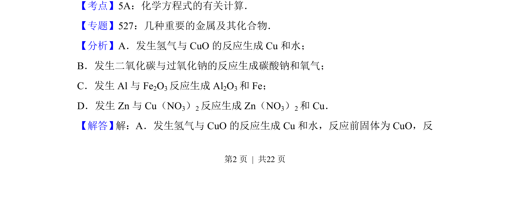
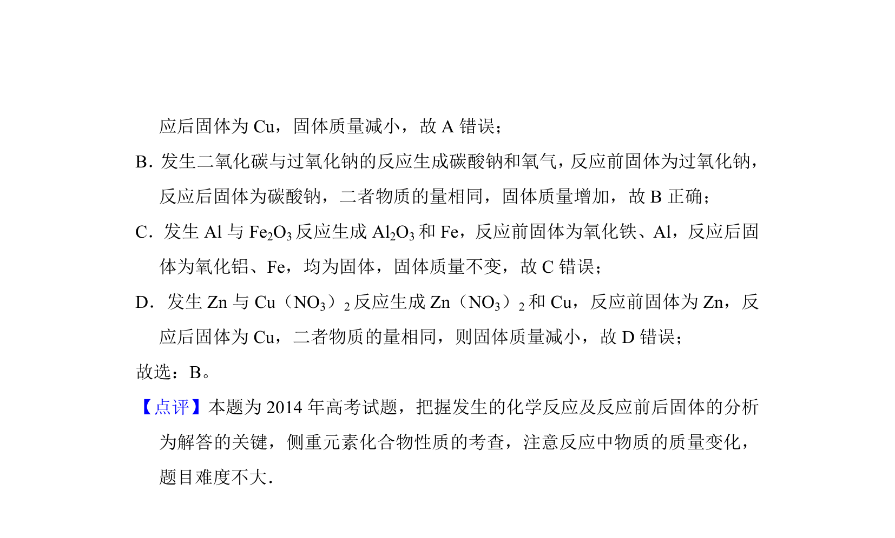

考点：反应物质量计算 物质转化关系 差量法
本题通过分析固体物质在化学反应前后的质量变化判断增重情况。


📄 原 PDF 第 2 页：
素材/真题/吉林/2008-2024·（吉林）化学高考真题/2014年高考化学试卷（新课标Ⅱ）（解析卷）.pdf
3．（6分）下列反应中，反应后固体物质增重的是（ ） A．氢气通过灼热的CuO粉末B．二氧化碳通过Na 2O2粉末 C．铝与Fe 2O3发生铝热反应D．将锌粒投入Cu（NO 3）2溶液
【考点】5A：化学方程式的有关计算．菁优网版权所有 【专题】527：几种重要的金属及其化合物． 【分析】A．发生氢气与CuO的反应生成Cu和水； B．发生二氧化碳与过氧化钠的反应生成碳酸钠和氧气； C．发生Al与Fe 2O3反应生成Al 2O3和Fe； D．发生Zn与Cu（NO 3）2反应生成Zn（NO 3）2和Cu． 【解答】 解：A．发生氢气与CuO的反应生成Cu和水，反应前固体为CuO，反